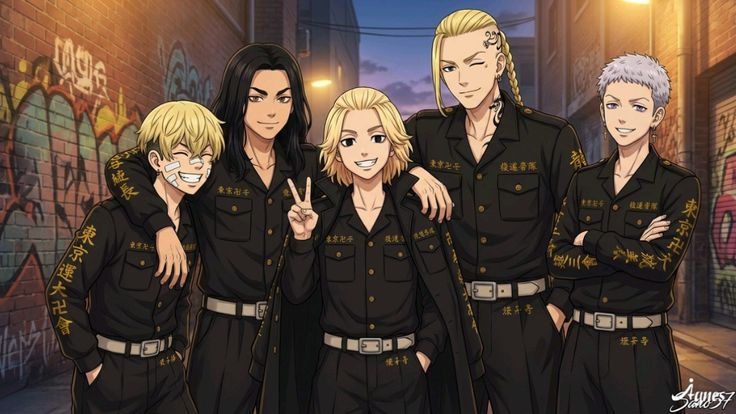

Trailer :
Genres :
- Action et Arts Martiaux
- Drame et Psychologique
- Science-Fiction
- Romance et Amitié
- Slice of Life
Synopsis :
À 26 ans, Takemichi Hanagaki, un jeune adulte sans ambition, apprend la mort tragique de Hinata, son unique amour de collège, tuée par le redoutable gang Tokyo Manji-kai.
Poussé sur les rails d'une gare par désespoir, il se réveille inexplicablement 12 ans dans le passé, à l'époque où il fréquentait encore le collège.
Comprenant qu'il a le pouvoir de modifier le futur, Takemichi décide d'infiltrer le Tokyo Manji-kai pour empêcher la création de ce gang violent et sauver Hinata, devenant ainsi un acteur clé dans un jeu dangereux où chaque choix peut tout bouleverser.
Personnages :
Takemichi Hanagaki
Takemichi Hanagaki est un jeune homme ordinaire, pleurnichard et manque de confiance en lui, qui acquiert la capacité de voyager dans le temps pour sauver ses proches. Bien que physiquement faible comparé aux autres, sa détermination inébranlable et son courage moral lui permettent de rallier les cœurs les plus endurcis. Son évolution d'un adulte raté à un leader respecté constitue le pilier émotionnel de l'histoire.
Manjirō Sano
Manjirō Sano, surnommé Mikey, est le fondateur et président charismatique du Tokyo Manji-kai, réputé comme le combattant le plus fort du Japon malgré son jeune âge. D'apparence innocent et gourmand de sucreries, il cache une part d'ombre terrifiante qui émerge lorsqu'il se met en colère. Son leadership naturel et son sens de la justice attirent une loyauté absolue de la part de tous les membres du gang.
Ken Ryūgūji
Ken Ryūgūji, connu sous le nom de Draken, est le vice-président du Tokyo Manji-kai et le meilleur ami de Mikey, servant de pilier rationnel au groupe. Reconnu à sa cicatrice sur le temple et sa grande taille, il est un combattant redoutable qui équilibre la folie de Mikey par son bon sens et sa loyauté sans faille. Il agit souvent comme un grand frère protecteur pour les membres plus jeunes et respecte profondément ceux qui montrent du courage.
Tetta Kisaki
Tetta Kisaki est un stratège de génie et membre fondateur du Tokyo Manji-kai, dont l'intelligence froide manipule les événements dans l'ombre pour atteindre ses propres objectifs. Bien que physiquement moins imposant que les autres, son esprit calculateur et sa capacité à prévoir les mouvements ennemis en font un adversaire redoutable. Son ambition secrète et sa relation complexe avec Hinata motivent ses actions souvent cruelles et manipulatoires.
Naoto Tachibana
Naoto Tachibana est le jeune frère cadet de Hinata, qui survit dans le futur grâce aux interventions de Takemichi dans le passé, devenant ainsi un détective privé compétent et déterminé. Dans le présent modifié, il est le seul à se souvenir des différentes lignes temporelles grâce à un lien mystérieux avec Takemichi, agissant comme son allié le plus fiable pour enquêter sur les gangs. Bien que moins puissant physiquement que les délinquants, son courage, son sens de la justice et son aide logistique sont essentiels pour protéger sa sœur et guider Takemichi dans ses missions.
Anime :
Saison 1 :
24 épisodes
Saison 2 :
13 épisodes
Saison 3 :
13 épisodes
Manga :
Nombre total de tomes : 31
Statut : terminé
Auteur : Ken Wakui
Note :
8/10
Commentaire :
J'aime trop ! Tous les persos sont attachants, les openings et endings sont super cool, mais pitié on veut une bonne animation et développez les persos, ça devient répétitif les guerres de gangs.
l